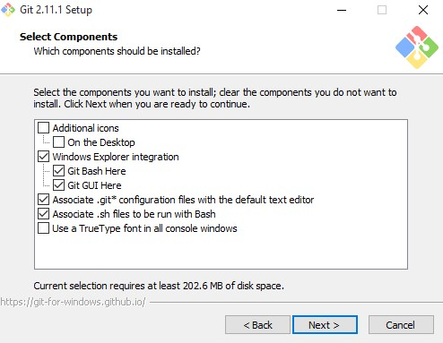

PORTADA

INSTRUCIONES DE MANUAL GIT
ANÁLISIS Y DESARROLLO DE SISTEMAS DE INFORMACIÓN
INSTRUCTOR:
DANIEL RAMIREZ RONCALLO
APRENDIZ:
ALAIN BUSTAMANTE
INSTRUCIONES DE MANUAL GIT
ANÁLISIS Y DESARROLLO DE SISTEMAS DE INFORMACIÓN
INSTRUCTOR:
DANIEL RAMIREZ RONCALLO
APRENDIZ:
ALAIN BUSTAMANTE
INTRODUCCIÓN
HISTORIA
COMANDO GIT
COMANDO TERMINAL
VIDEO EXPLICATIVO
INSTALAR GIT
¿Qué es GitHub?
GitHub es una plataforma de desarrollo colaborativo de software para alojar proyectos utilizando el sistema de control de versiones Git.
Note
El código se almacena de forma pública, aunque también se puede hacer de forma privada, creando una cuenta de pago.
¿Para que sirve?
GitHub aloja tu repositorio de código y te brinda herramientas muy útiles para el trabajo en equipo, dentro de un proyecto.
Además de eso, puedes contribuir a mejorar el software de los demás. Para poder alcanzar esta meta, GitHub provee de funcionalidades para hacer un fork y solicitar pulls.
Realizar un fork es simplemente clonar un repositorio ajeno (genera una copia en tu cuenta), para eliminar algún bug o modificar cosas de él. Una vez realizadas tus modificaciones puedes enviar un pull al dueño del proyecto. Éste podrá analizar los cambios que has realizado fácilmente, y si considera interesante tu contribución, adjuntarlo con el repositorio original.
¿Qué herramientas proporciona?
En la actualidad, GitHub es mucho más que un servicio de alojamiento de código. Además de éste, se ofrecen varias herramientas útiles para el trabajo en equipo. Entre ellas, caben destacar:

• Una wiki para el mantenimiento de las distintas versiones de las páginas.
• Un sistema de seguimiento de problemas que permiten a los miembros de tu equipo detallar un problema con tu software o una sugerencia que deseen hacer.
• Una herramienta de revisión de código, donde se pueden añadir anotaciones en cualquier punto de un fichero y debatir sobre determinados cambios realizados en un commit específico.
• Un visor de ramas donde se pueden comparar los progresos realizados en las distintas ramas de nuestro repositorio.
¿Qué uso le daremos?
En nuestra especialidad “Programación”, fuimos aprendiendo cosas y creando programas de código abierto, fomentando el software libre; es por eso que presentamos esta gran herramienta enfocada al crecimiento de proyectos comunitarios y libres.
En esta página podremos crear una cuenta gratuita y comenzar a subir repositorios de código (o crearlos desde 0), para que con la ayuda de todos ese proyecto mejore; así como también fortalecer los proyectos de los demás para crecer como grupo.
Git
Una breve historia de Git
Como muchas de las grandes cosas en esta vida, Git comenzó con un poco de destrucción creativa y encendida polémica. El núcleo de Linux es un proyecto de software de código abierto con un alcance bastante grande. Durante la mayor parte del mantenimiento del núcleo de Linux (1991-2002), los cambios en el software se pasaron en forma de parches y archivos. En 2002, el proyecto del núcleo de Linux empezó a usar un DVCS propietario llamado BitKeeper.
En 2005, la relación entre la comunidad que desarrollaba el núcleo de Linux y la compañía que desarrollaba BitKeeper se vino abajo, y la herramienta dejó de ser ofrecida gratuitamente. Esto impulsó a la comunidad de desarrollo de Linux (y en particular a Linus Torvalds, el creador de Linux) a desarrollar su propia herramienta basada en algunas de las lecciones que aprendieron durante el uso de BitKeeper. Algunos de los objetivos del nuevo sistema fueron los siguientes:
• Velocidad
• Diseño sencillo
• Fuerte apoyo al desarrollo no lineal (miles de ramas paralelas)
• Completamente distribuido
• Capaz de manejar grandes proyectos (como el núcleo de Linux) de manera eficiente (velocidad y tamaño de los datos)
Desde su nacimiento en 2005, Git ha evolucionado y madurado para ser fácil de usar y aún conservar estas cualidades iniciales. Es tremendamente rápido, muy eficiente con grandes proyectos, y tiene un increíble sistema de ramificación (branching) para desarrollo no lineal (véase el Capítulo 3).
Configuración Básica
Configurar Nombre que salen en los commits
git config --global user.name "dasdo"
Configurar Email
git config --global user.email dasdo1@gmail.com
Marco de colores para los comando
git config --global color.ui true
Iniciando repositorio
Iniciamos GIT en la carpeta donde esta el proyecto
git init
Clonamos el repositorio de github o bitbucket
git clone
Añadimos todos los archivos para el commit
git add .
Hacemos el primer commit
git commit -m "Texto que identifique por que se hizo el commit"
subimos al repositorio
git push origin master
GIT CLONE
Clonamos el repositorio de github o bitbucket
git clone
Clonamos el repositorio de github o bitbucket ?????
git clone GIT ADD
Añadimos todos los archivos para el commit
git add .
Añadimos el archivo para el commit
git add
Añadimos todos los archivos para el commit omitiendo los nuevos
git add --all
Añadimos todos los archivos con la extensión especificada
git add *.txt
Añadimos todos los archivos dentro de un directorio y de una extensión especifica
git add docs/*.txt
Añadimos todos los archivos dentro de un directorios
git add docs/
GIT COMMIT
Cargar en el HEAD los cambios realizados
git commit -m "Texto que identifique por que se hizo el commit"
Agregar y Cargar en el HEAD los cambios realizados
git commit -a -m "Texto que identifique por que se hizo el commit"
De haber conflictos los muestra
git commit -a
Agregar al ultimo commit, este no se muestra como un nuevo commit en los logs. Se puede especificar un nuevo mensaje
git commit --amend -m "Texto que identifique por que se hizo el commit"
GIT PUSH
Subimos al repositorio
git push
Subimos un tag
git push --tags
GIT LOG
Muestra los logs de los commits
git log
Muestras los cambios en los commits
git log --oneline --stat
Muestra graficos de los commits
git log --oneline --graph
GIT DIFF
Muestra los cambios realizados a un archivo
git diff
git diff --staged
GIT HEAD
Saca un archivo del commit
git reset HEAD
Devuelve el ultimo commit que se hizo y pone los cambios en staging
git reset --soft HEAD^
Devuelve el ultimo commit y todos los cambios
git reset --hard HEAD^
Devuelve los 2 ultimo commit y todos los cambios
git reset --hard HEAD^^
Rollback merge/commit
git log
git reset --hard GIT REMOTE
Agregar repositorio remoto
git remote add origin
Cambiar de remote
git remote set-url origin
Remover repositorio
git remote rm
Muestra lista repositorios
git remote -v
Muestra los branches remotos
git remote show origin
Limpiar todos los branches eliminados
git remote prune origin
GIT BRANCH
Crea un branch
git branch
Lista los branches
git branch
Comando -d elimina el branch y lo une al master
git branch -d
Elimina sin preguntar
git branch -D GIT TAG
Muestra una lista de todos los tags
git tag
Crea un nuevo tags
git tag -a GIT REBASE
Los rebase se usan cuando trabajamos con branches esto hace que los branches se pongan al día con el master sin afectar al mismo
Une el branch actual con el mastar, esto no se puede ver como un merge
git rebase
Cuando se produce un conflicto no das las siguientes opciones:
cuando resolvemos los conflictos --continue continua la secuencia del rebase donde se pauso
git rebase --continue
Omite el conflicto y sigue su camino
git rebase --skip
Devuelve todo al principio del rebase
git reabse --abort
Para hacer un rebase a un branch en especifico
git rebase OTROS COMANDOS
Lista un estado actual del repositorio con lista de archivos modificados o agregados
git status
Quita del HEAD un archivo y le pone el estado de no trabajado
git checkout --
Crea un branch en base a uno online
git checkout -b newlocalbranchname origin/branch-name
Busca los cambios nuevos y actualiza el repositorio
git pull origin
Cambiar de branch
git checkout
Une el branch actual con el especificado
git merge
Verifica cambios en el repositorio online con el local
git fetch
Borrar un archivo del repositorio
git rm
Fork
Descargar remote de un fork
git remote add upstream
Merge con master de un fork
git fetch upstream
git merge upstream/master
Línea de comandos o terminal es una interfaz de texto en la que pueden escribirse reglas o comandos que el ordenador debe llevar a cabo. Muchas de las tareas que realizamos cotidianamente son realmente más eficaces si las llevamos a cabo con el terminal, especialmente en relación a los derechos de los archivos.
Desde el terminar podemos realizar diferentes tareas, como listar nuestros documentos, navegar a través de nuestros ficheros, crear nuevos archivos y carpetas, ejecutar programas, escribir scripts de complejidad variable, etc.
En el MAC, el terminal se sitúa en Applicaciones > Utilities > Terminal.
(N.B. Si no os gusta el color negro, podéis personalizarlo a vuestro gusto).
El símbolo $ (shell prompt) indica que el terminal está listo para recibir órdenes y que ya puedes escribir en la interfaz.
###Sistema de ficheros (filesystem).
Antes de nada, es preciso que conozcas el funcionamiento del sistema de ficheros file system) de tu máquina, es decir, cómo organiza las directorios (o carpetas, folders) y los archivos (o documentos, files).
La estructura es siempre arbórea: hay un directorio raíz (root directory) y, a partir de él, encontramos los descendientes (children).
Ejemplo:
Para navegar a través de tus directorios y ficheros, hay una serie de comandos necesarios:• pwd - print working directory - indica en qué directorio te encuentras
• ls - list - lista los directorios y archivos de tu ubicación
• cd - change directory - se utiliza para cambiar de directorio
• cd nombre_del_directorio - navega hacia un directorio descendiente
• cd ../ - sube un directorio
• cd ../../ - sube dos directorios
• cd / - va al directorio raíz de tu ordenador
• mkdir - make directory - crea un directorio
• touch - crea un nuevo file en el directorio donde te encuentras (acordaros de poner siempre la extensión)
• ls -a - lista todos los ficheros, incluso los que están ocultos que empiezan por un .
• ls -l - lista todos los ficheros de un directorio en un formato largo
• ls -t - ordena ficheros y directorios según su fecha de modificación
• ls -alt - lista todos los contenidos, incluso los ficheros ocultos y directorios, en formato largo, ordenados por la fecha de la última modificación.
• cp - copy - copia directorios y archivos. En primer lugar se señala el nombre del archivo cuyo contenido se desea copiar y a continuación el documento donde se quiere pegar:
• cp fichero_origen.txt fichero_destino.txt
• cp fichero_origen.txt directorio_destino/ copia un fichero en un directorio de destino.
• cp fichero_origen.txt fichero_destino.txt directorio/ cambia los dos ficheros a un directorio de destino. N.B. Si deseáramos copiar diferentes ficheros en un directorio, deberíamos indicar en primer lugar todos los ficheros y en último lugar el directorio o archivo de destino.
• cp *.txt - Este comando copiaría todos los ficheros que tuvieran formato .txt.
• cp t*.txt - Este copiaría sólo los ficheros que empezaran por la letra t.
• cp * Directorio_Destino - Copiaría todo el contenido del directorio donde nos encontramos y lo pegaría al directorio de destino.
• mv fichero.txt Directorio_Destino - Moverá el fichero.txt al directorio de destino indicado.
• mv fichero.txt fichero.txt Directorio_Destino - Moverá los ficheros al directorio de destino indicado.
• mv fichero_nombre_antiguo.txt fichero_nombre_moderno.txt - Renombra los ficheros.
• rm fichero.txt - elimina un archivo
• rm -r directorio - elimina el directorio y todo lo que contiene.
• pico fichero.txt - Creará un nuevo documento y lo abrirá en el editor
• Ctrl O - Guarda el fichero (como Output)
• Crt X - Sale del programa (eXit)
• Ctrl G - Abre el menú de ayuda
• Clear - limpia la pantalla
Para empezar, entra a la página de Git, darle click al botón de Downloads for Windows.

Página principal de Git Una vez descargada, dale click al archivo con el formato Git-version.exe. Al inicio preguntará por permisos para ejecutar el instalador, a lo cual debemos responder que sí.

Pantalla inicial del instalador Como muchos de los instaladores en Windows, debemos de aceptar las opciones por defecto y darle Next (siguiente) a todo hasta que nos salga el botón de instalar.
Ruta donde se instalará Git
Configuración de componentes que vienen disponibles con Git
Nombre con el cual se puede buscar desde la lista de programas
Terminales desde la cual se puede ejecutar Git (Git Bash y Command Prompt)
Configuración del formato para los finales de línea de los archivos.
Tipo de emulador que usará Git Bash
Opciones extra de Git
Nuevas herramientas de Git Una vez terminada la configuración del instalador de Git, comenzará a instalar todos los archivos necesarios en la carpeta indicada al inicio.
Instalación de Git Al finalizar la instalación, nos dará la opción de abrir Git Bash para finalizar.
Fin de la instalación